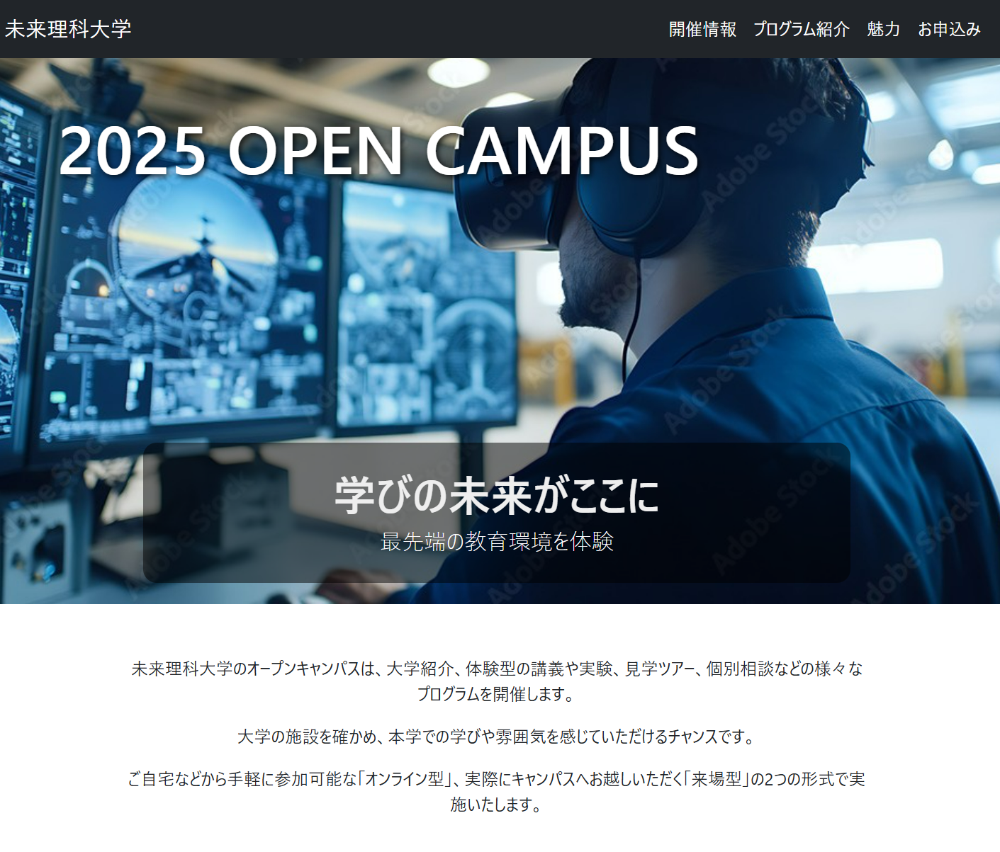
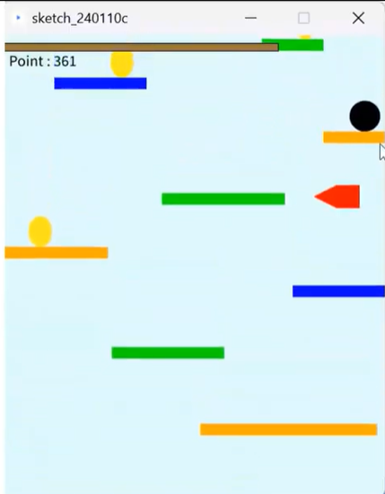
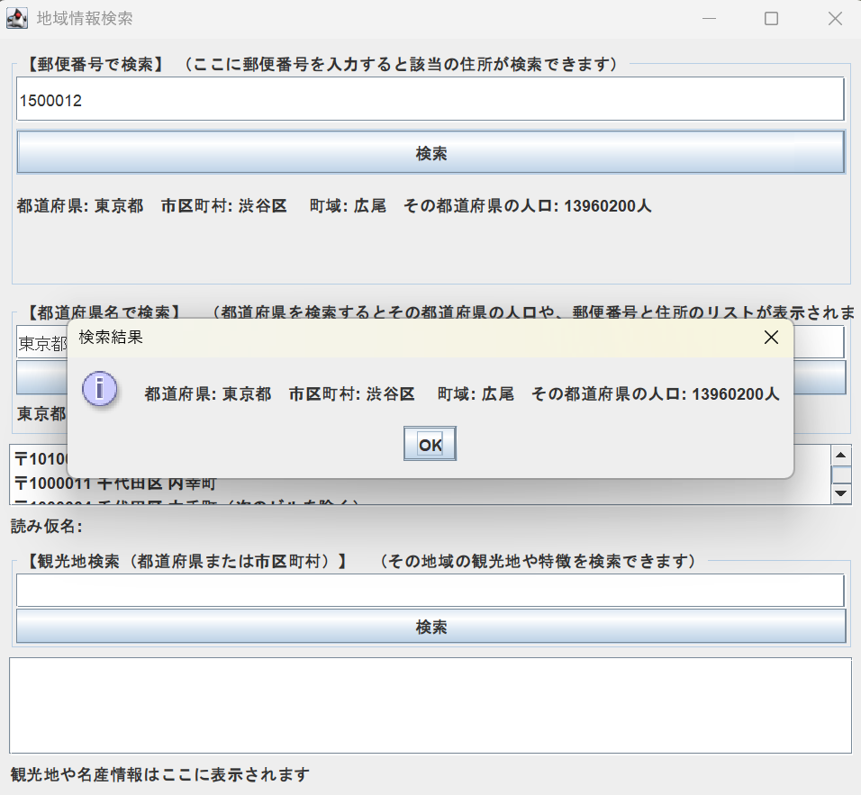
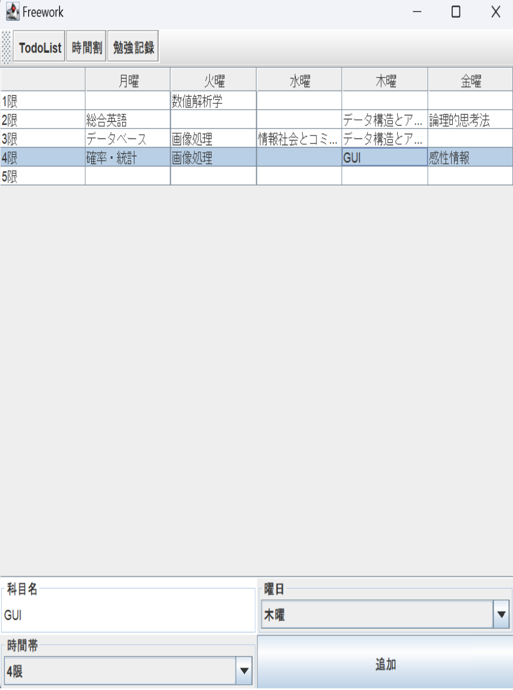

作品一覧
花火CG作品（Three.js）

TypeScriptとThree.jsを用いて制作したインタラクティブなCG作品です。 夜の都会の街をテーマに、花火が打ちあがるシーンを表現しています。 起動した最初は都会の街が見えている状態ですが、ユーザがズームアウトすると、地球や月、火星などの天体が見えるようになります。 これによって地球の中に都会の街並みがあるということを表現し、都会の夜景→地球→宇宙という様に空間のスケールが変化するようなシーンに仕上げました。
工夫点：
・打ち上げ、爆発、拡散を分けて実装し、それぞれの挙動を調整可能にした
・より自然な動きにするため、速度変化やランダム性を導入
使用技術：Three.js / TypeScript
Links
デモ GitHubオープンキャンパスWebサイト

HTML/CSS/JavaScriptを用いて制作した架空の大学のオープンキャンパスのWebサイトです。 理系大学をコンセプトに、視認性とデザイン性を意識しました。
工夫点：
・学部ごとにデザインを変更
・情報の見やすさを意識したレイアウト設計
Links
デモ GitHub動画
アニメーションゲーム（Processing）


カーソル操作でボールを制御するアクションゲームと、ボールを制御しブロックを崩すゲームの2種類を制作しました。 操作感やアイテムを調整しながらプレイ体験の向上を意識しました。
工夫点：
・操作感の調整
・ゲームバランスの改善
Links
ボール操作 GitHub ブロック崩し GitHub 動画セルフオーダーシステムUI

Figmaを用いて、飲食店向けのセルフオーダーシステムのUIデザインを制作しました。 おしゃれなイタリアンレストランをコンセプトに、直感的に操作できる画面遷移や視認性を意識して設計しました。
工夫点：
・直感的な操作導線
・視認性を考慮したデザイン設計
Links
動画地域情報検索アプリ（Java）

Javaを用いて、郵便番号や都道府県名をもとに、住所・郵便番号・人口・観光地情報といった、地域に関する様々な情報を検索できるアプリケーションを制作しました。
工夫点：
・データベース連携
・検索結果の見やすさを意識
Links
GitHub学校生活管理アプリ（Java）

Javaを用いて、時間割作成・ToDoリスト・勉強記録の3つの機能を持つ、学校生活の管理を支援するアプリケーションを制作しました。
工夫点：
・UI部品を活用
・ユーザーの操作に応じて情報を管理・表示できるよう実装
Links
GitHub